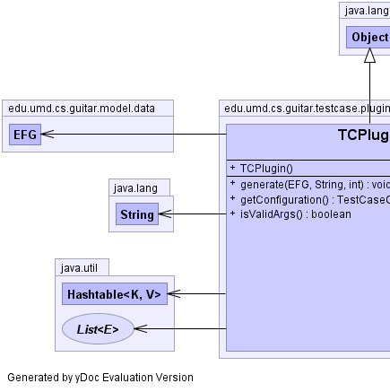
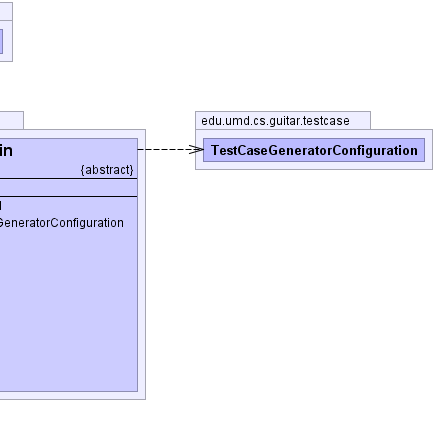

edu.umd.cs.guitar.testcase.plugin.TCPlugin
edu.umd.cs.guitar.testcase.plugin.TCPlugin
|
|||||||||
| PREV CLASS NEXT CLASS | FRAMES NO FRAMES | ||||||||
| SUMMARY: NESTED | FIELD | CONSTR | METHOD | DETAIL: FIELD | CONSTR | METHOD | ||||||||
java.lang.Object
public abstract class TCPlugin
Common interface for all Test case generator plugins
|  |  |
| Constructor Summary | |
|---|---|
TCPlugin()
|
|
| Method Summary | |
|---|---|
abstract void |
generate(edu.umd.cs.guitar.model.data.EFG efg,
java.lang.String outputDir,
int nMaxNumber)
Generate test cases |
TestCaseGeneratorConfiguration |
getConfiguration()
Overridable function for retrieving additional plugin-specific arguments |
abstract boolean |
isValidArgs()
Check arguments for each plugin |
| Methods inherited from class java.lang.Object |
|---|
clone, equals, finalize, getClass, hashCode, notify, notifyAll, toString, wait, wait, wait |
| Constructor Detail |
|---|
public TCPlugin()
| Method Detail |
|---|
public TestCaseGeneratorConfiguration getConfiguration()
public abstract boolean isValidArgs()
public abstract void generate(edu.umd.cs.guitar.model.data.EFG efg,
java.lang.String outputDir,
int nMaxNumber)
efg - outputDir - nMaxNumber -
|
|||||||||
| PREV CLASS NEXT CLASS | FRAMES NO FRAMES | ||||||||
| SUMMARY: NESTED | FIELD | CONSTR | METHOD | DETAIL: FIELD | CONSTR | METHOD | ||||||||